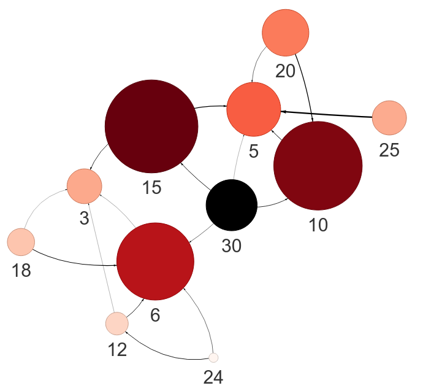
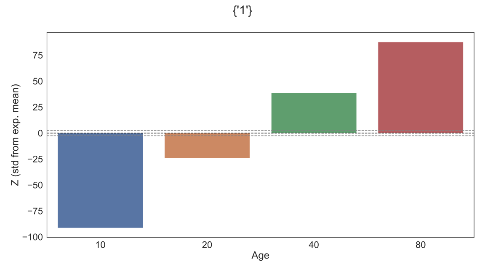

MultiNet - Multi-Morbidity Network Analysis
Note: All example data used in this repository is simulated and for illustrative purposes only.
See code README for installation and usage instructions.
Overview
Build and visualise multi-morbidity networks to discover significant disease associations.
This command line tool provides user-friendly and automated multi-morbidity network analysis. Detect significant associations are correcting for confounding factors such as Age and Sex. Includes community detection for un-directed networks. Option to build directed networks when diagnosis times are available.
Configuration
MultiNet is configured via a single configuration file in YAML format.
The configuration describes the file-path of the input data and column names of the desired strata and diseases.
All columns provided in the configuration must be present in the input data.
MultiNet can automatically handle gzipped compressed files and file seperator can be configured to any relevant character.
The configuration file shown below is suitable for the example data generated by multinet simulate out (see below).
input: MultiNet-data.csv
edgeData: MultiNet-processed.csv.gz
networkPlot: MultiNet.html
codes:
code1: time1
code2: time2
code3: time3
code4: time4
strata:
- Age
refNode: 30
maxNode: 10
wordcloud: MultiNet-wordcloud.svg
fromRef: true
excludeNode: 1
enrichmentPlot: MultiNet-enrichment.svg
enrichmentNode: 1
demographics: Age
seed: 42
Usage
MultiNet can be run from the command line and additional help is provided via multinet --help.
Generate Example Data
The simulate sub-command generates suitably formatted input data for testing functionality.
It also writes an example config file in YAML format.
multinet simulate --config config.yaml MultiNet-data.csv
Stage 1 - Processing input and generate edge weights.
The process sub-command reads the input data and performs a stratified odds-ratio test (Mantel-Haenszel method) for each pair of morbidities.
The results are written in .csv format to the path defined by edgeData: in the configuration file.
The default simulated data should take approximately 5 minutes to process.
multinet process config.yaml
Stage 2 - Network Construction and Visualisation
The network sub-command parses the output of multinet process into a network and generate an interactive visualisation.
The visualisation is written in .html format to the path defined by networkPlot: in the configuration file.
The --display flag will open the output visualisations on your systems webbrowser.
multinet network --display config.yaml
Example output
The example dataset is designed to test MultiNet functionality and illustrate its output. The simulated data defines relationship among the nodes according to their numerical values. Specifically, a given node is more likely to associate with numeric factors (e.g. node 8 -> 4, 2, 1). MultiNet can successfully recover these directed relationships in the network analysis.
Network Plot
The conventional way to visualise connections is via a Network plot. The user may choose to visualise the entire network or, as below, the network centered on a reference node or nodes. This is often helpful when working with large networks or if you are interested in specific nodes.
If a reference node is provided then node size and colour are scaled to the distance from the reference node. Otherwise, node size and colour are scaled to betweenness centrality.
Configuration settings that control the output of the Network plot.
refNode: 30 # Node(s) to centre the Network Plot (optional).
maxNode: 10 # Plot nearest nodes to reference (if refNode is set).
excludeNode: 1 # Exclude node(s) from the visualisation (optional).
minDegree: 0 # Exclude nodes by degree (if refNode is NOT set).
stat: OR # Set weights by Odds Ratio (OR) or Risk Ratio (RR)
alpha: 0.01 # Exclude edges with adj. p-value less than alpha.
minObs: 100 # Exclude edges with too few observations.

Figure: Example network with reference node 30 and 10 closest nodes. Reference nodes are black.
WordCloud
If reference nodes are provided then the user may also visualise relationships with a WordCloud.
Here, the size of each node is scaled to the distance from the reference node.
If the network is directed the WordCloud can either represent downstream nodes from the reference or upstream nodes to the reference.
This is controlled via config['fromRef'].
Configuration settings that control the output of the WordCloud plot.
wordcloud: MultiNet-wordcloud.svg # Filename for plot (required).
refNode: 30 # Node(s) to centre the WordCloud.
fromRef: true # Plot "from" reference or "to" reference (directed only)
excludeNode: 1 # Exclude node(s) from the visualisation (optional).
maxWords: None # Include N closest nodes, set None to include all.
Figure: Example WordCloud with all downstream nodes from reference node 30.
Enrichment Analysis with Stratification
MultiNet also provides additional functionality to test specific nodes for enrichment against discrete grouping factors, such as demographics. For illustration, the simulated example dataset enforces a positive enrichment of node "1" within older age groups. Multiple demographic groups can be provided; each will be tested for enrichment of the specific node and stratified by the other groups.
Configuration settings that control the output of the Enrichment plot.
enrichmentPlot: MultiNet-enrichment.svg # Filename for plot (required).
enrichmentNode: 1 # Node to assess enrichment within each demographic.
demographics: Age # Demographics of interest (required).
seed: 42 # Seed to control random permutations.
permutations: 1000 # Total permutations to perform.
minObs: 100 # Exclude stratified groups with too few observations.
multinet enriched --display config.yaml

Figure: Example enrichment of node 1 by Age